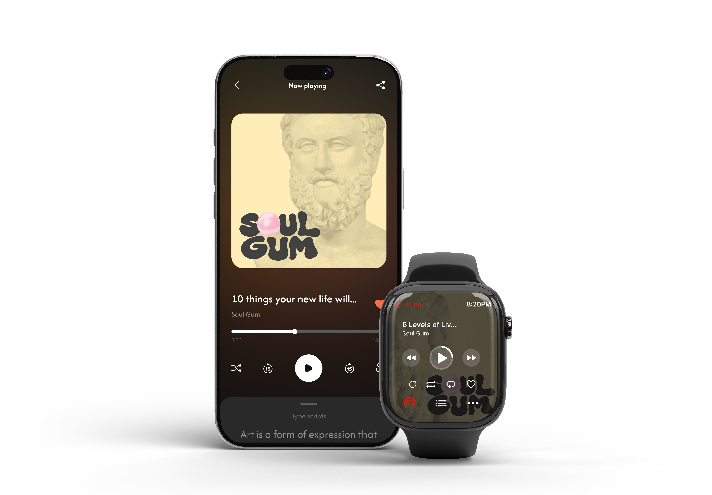
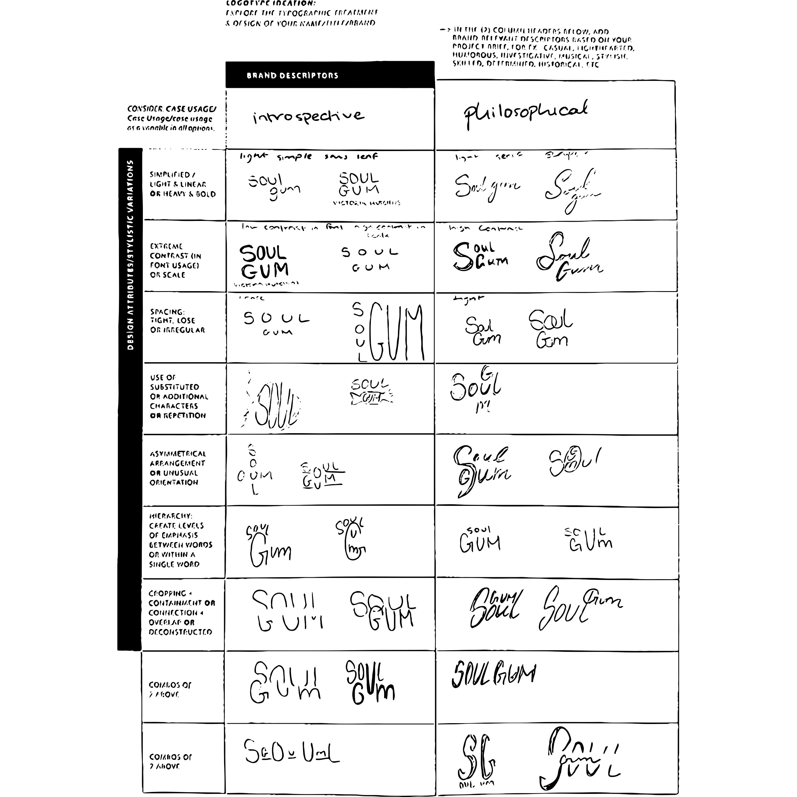
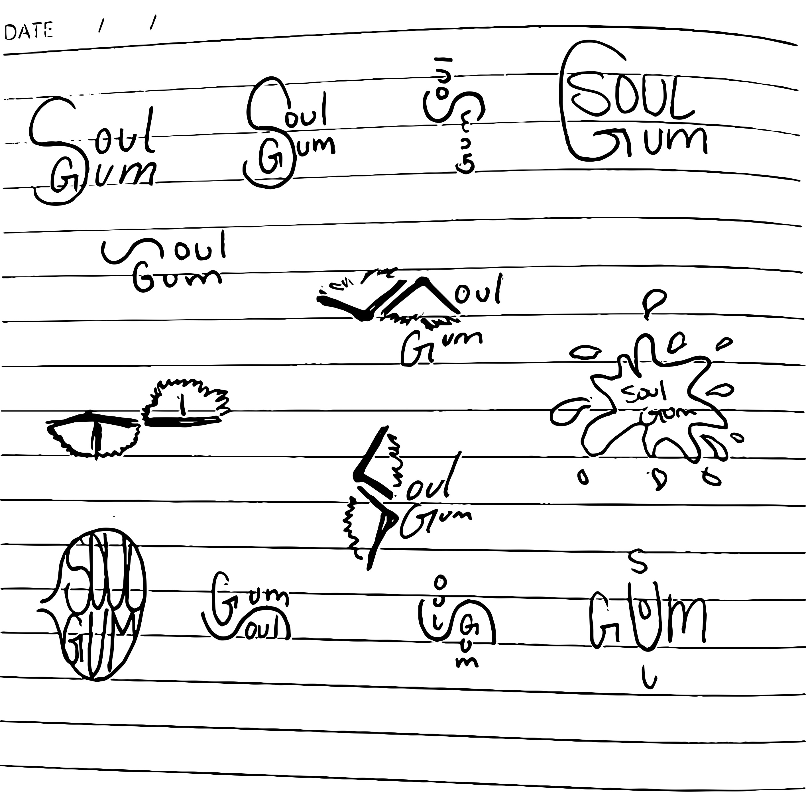
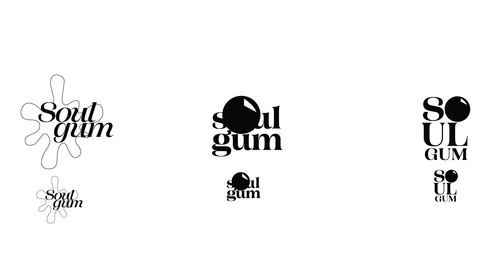
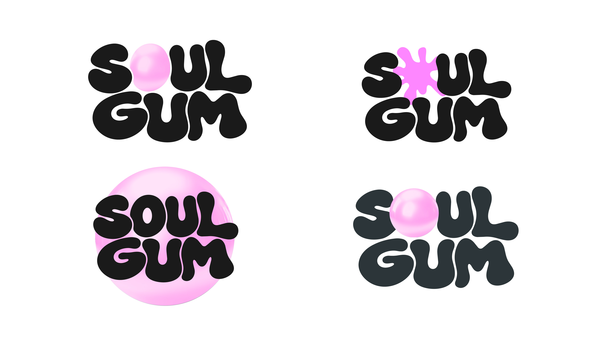
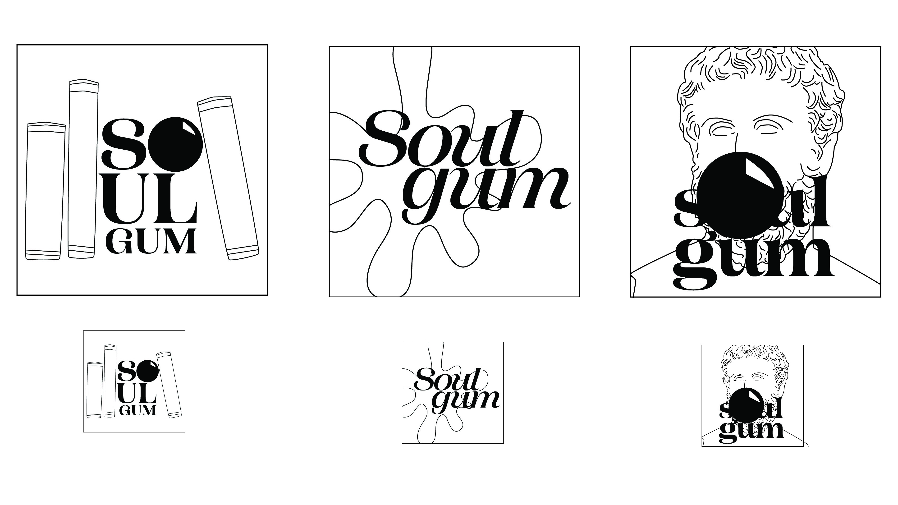
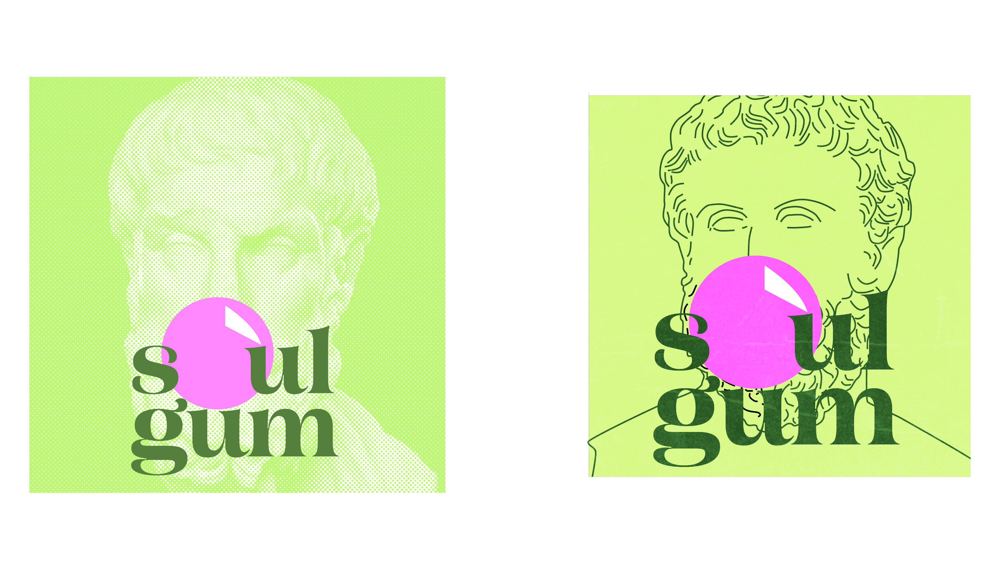
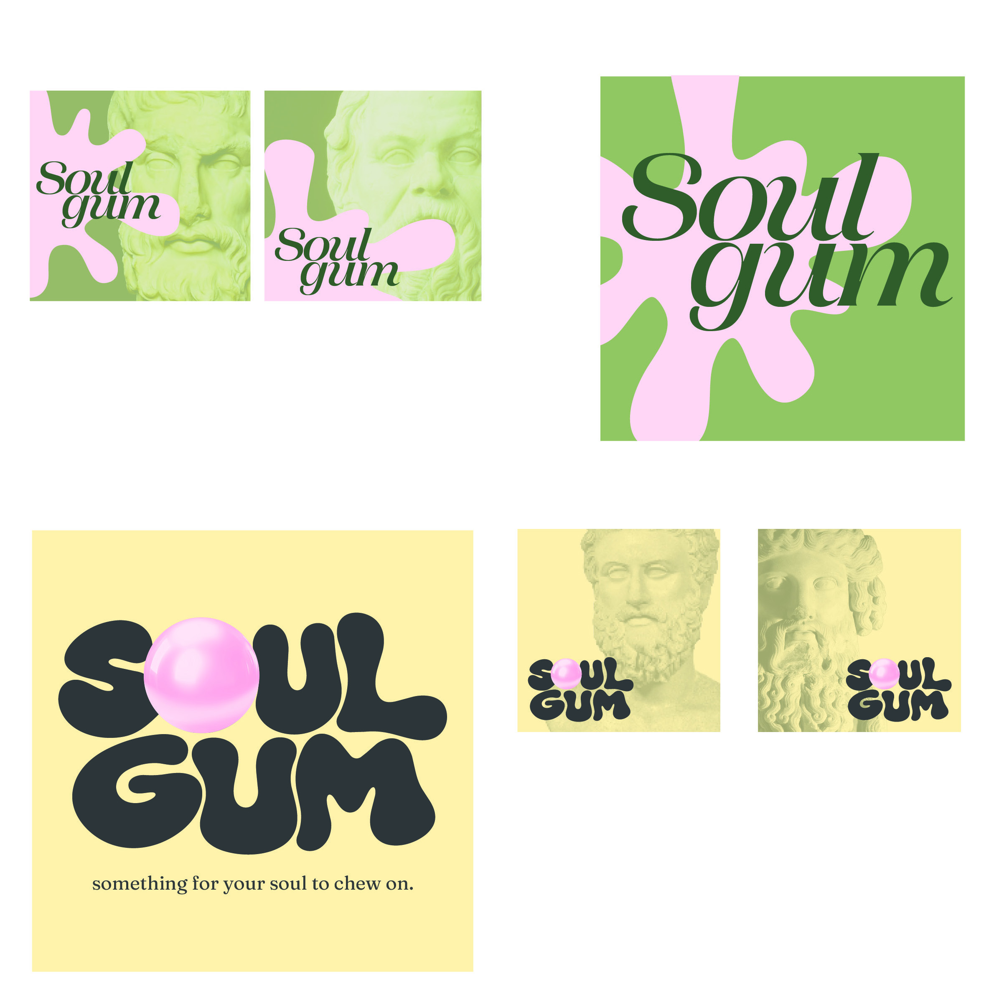
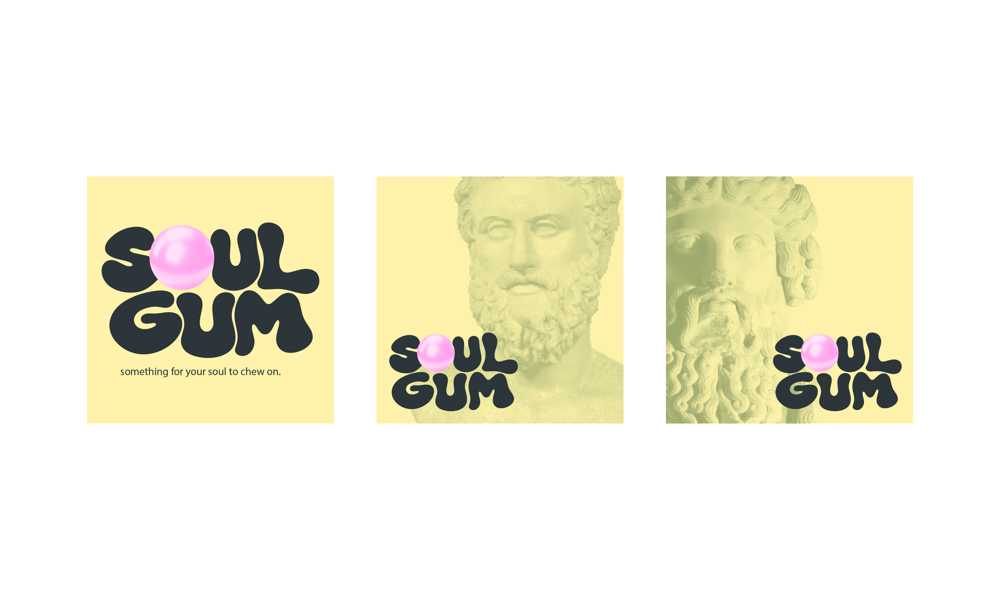

Soul Gum is a podcast identity built around the contrast between thoughtful conversations and the lighthearted familiarity of chewing gum. The goal was to create a visual language that feels playful and memorable while still giving the podcast’s more reflective subject matter room to come through.

The identity brings a playful gum-inspired concept into a polished presentation, establishing the tone for the podcast.
Process: Sketches.
Early sketches were used to explore how the name Soul Gum could become a distinctive typographic mark. I tested different lettering ideas and visual approaches, looking for a balance between the tactile, imperfect character of chewed gum and the clarity needed for a recognizable podcast identity.

Initial lettering studies explore how the name could feel expressive, informal, and characterful.

Further sketching develops possible shapes and arrangements before moving into digital refinement.
Process: Iteration.
From the strongest sketch directions, I developed digital iterations of the main wordmark. I experimented with typography, shape, and contrast to find a mark that could hold its own at cover size and remain recognizable across a series of episodes.

This version tests the wordmark’s overall shape and how its lettering works together as one visual unit.

An alternate direction explores a different balance of typography and visual weight.

Refinement focuses on making the mark distinctive while keeping it legible at smaller sizes.

Comparing iterations helped clarify which details strengthened the identity and which competed with it.
Cover System.
With the primary identity taking shape, the next step was to consider how it could work across podcast artwork. The cover system needed to keep the Soul Gum name consistent while allowing room for individual episodes to have their own personality.

The cover direction brings the wordmark and supporting visuals together into a clear, repeatable identity.
Final Identity.
The final direction pairs a bold, recognizable type mark with a playful concept rooted in gum. Keeping the core identity consistent creates cohesion, while subtle variations in supporting artwork can distinguish individual episodes without losing the connection to the overall brand.

The final artwork establishes the main visual language: expressive typography with a playful, approachable tone.Seen in context, the identity is designed to feel cohesive and recognizable wherever the podcast appears.
Conclusion.
Developing Soul Gum gave me the opportunity to explore how typography and a simple concept can shape a brand’s personality. The process moved from loose sketching to focused digital iteration, with an emphasis on creating a flexible identity that feels fun without losing the thoughtful character of the podcast.